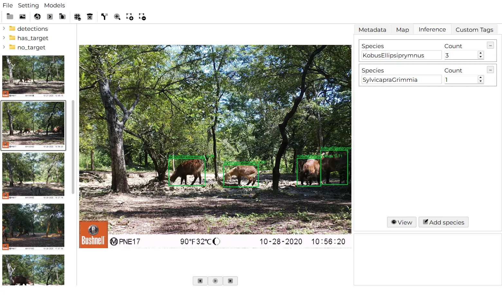

Detection and species ID
MegaDetector finds animals, people and vehicles. Regional classifiers for Africa, Europe, the Amazon, New Zealand and more name the species.
Declas finds the animals in your camera trap images and videos, names the species, and gives you one clean CSV ready for analysis. Free, open source, and it works without internet.

Point Declas at a folder of camera trap media. It finds animals, people and vehicles, identifies species with a regional model, and keeps every result editable.
MegaDetector finds animals, people and vehicles. Regional classifiers for Africa, Europe, the Amazon, New Zealand and more name the species.
Process a single folder, or a full project with one folder per station. Each folder gets its own detections.json.
Videos are sampled every n frames, each frame is analysed, and its date and time are worked out from the video.
Fix a species name or a count, draw a box around an animal the model missed, or delete a wrong one. Every edit goes into the report.
A depth model estimates how far each animal is from the camera, with field-of-view correction per station, ready for distance sampling.
Results, EXIF date, time, GPS and your own tags are merged into one CSV, with one row per species per image.
Open Models › Extensions and download a detector or a classifier for your region.
Select a station folder or a whole project. Thumbnails of every image and video appear on the left.
Run on the image you are looking at, or on every folder at once. Progress is shown in the log.
Check the boxes, fix what is wrong, add tags, then build the table with one click.
Screenshots from a West African savanna survey processed with the Sub-Saharan Africa Wildlife Detector, including night-time infrared shots.




Free forever. No account, no upload, no limits on the number of images.